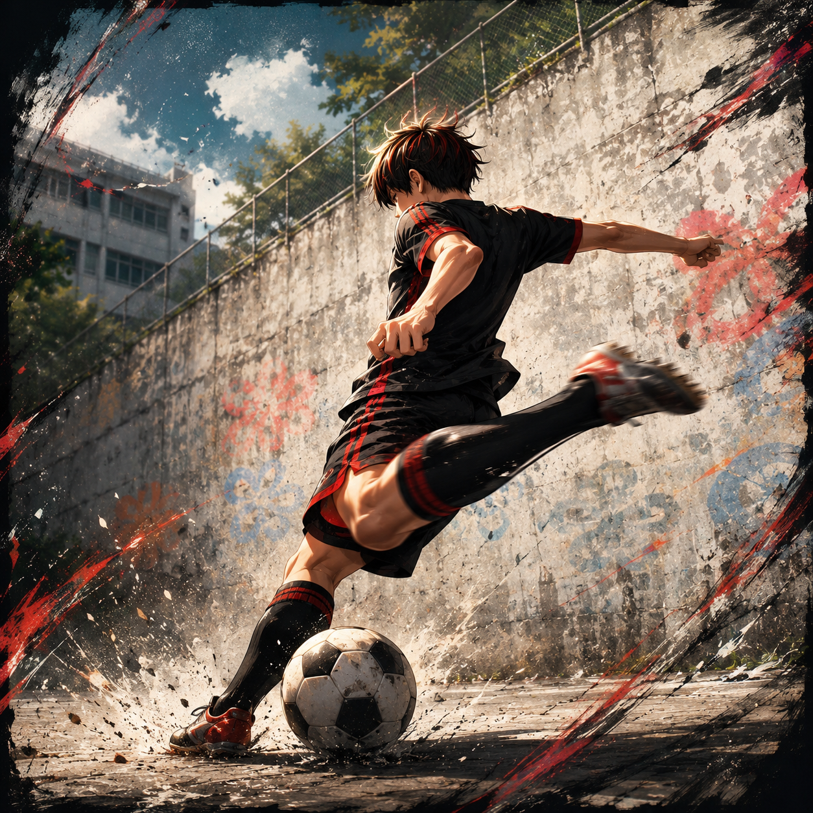

Choose Your Game
Chris LEE.PAPA Game Center는 아빠가 두 딸 율이와 정이를 위해 직접 기획하고 개발한 7가지 무료 온라인 미니게임 모음입니다. 전략 보드게임부터 오목, 컬링, 테트리스, 물리 퍼즐, 원소 액션까지 — 온 가족이 함께 즐길 수 있는 게임들을 만나보세요.

부르마블 게임
주사위를 굴려 우주와 아카이브의 세계를 여행하는 전략 보드게임입니다. 부동산을 매입하고 통행료를 받으며 상대를 파산시키는 부르마블 방식의 보드게임. 2~4인 멀티플레이 지원. 당신만의 기록을 개척하세요.

책 쌓기 마스터
아빠의 서재에서 중력과 균형의 법칙에 도전하세요. 조심스럽게 책을 떨어뜨려 가장 높이 쌓아 올리는 마스터가 되어보세요! 물리 엔진 기반의 책 쌓기 퍼즐로, 기울기와 무게중심을 계산해 최고 기록에 도전하는 1인용 캐주얼 게임입니다.

Dynamic Omok
부제 five in a row. 캐릭터를 선택하고 제한시간 안에 다섯 돌을 이어 승리를 쟁취하는 다이내믹 오목 대전입니다. 2인 대전 및 AI와의 1인 플레이 지원. 타이머 압박 속에서 수읽기와 순발력을 동시에 겨루는 전략 오목 게임입니다.

매직 컬링
빛과 어둠의 진영을 선택하고 마법 스킬을 활용하여 승리를 쟁취하는 판타지 마법 컬링 대전입니다. 스톤을 투구해 하우스 중앙에 가장 가까이 배치하는 전략 컬링 룰에 마법 스킬 시스템을 결합한 2인 대전 게임입니다.

독수리의 테트리스
클래식의 귀환! 네온 불빛 아래에서 블록을 쌓고 라인을 클리어하며 최고의 기록에 도전하는 퍼즐 게임입니다.

요정 포포의 여정
귀여운 요정 포포가 하늘에서 떨어지는 얼음, 불 그리핀의 공격을 좌우로 피하고 맛있는 음식을 먹을 수 있게 해주세요! 기회는 세번!

골이예요 GOAL
MIRACLE SHOT의 네 주인공 중 한 명을 선택해 거대한 점수벽을 향해 슛을 날리고, 맞힌 점수를 누적해 승부를 겨루는 1:1 축구 게임입니다.
GAME GUIDE
① 부르마블 게임 — Board Game
주사위를 굴려 우주 테마의 보드 위를 이동하며 땅을 구매하고 건물을 세우는 멀티플레이 보드게임입니다. 상대방이 내 땅을 밟으면 통행료를 받고, 상대를 파산시키면 승리합니다. 2~4인이 함께 즐길 수 있습니다.
② 책 쌓기 마스터 — Physics Puzzle
물리 엔진을 이용한 책 쌓기 게임으로, 떨어지는 책을 정확한 타이밍에 놓아 최대한 높이 쌓는 것이 목표입니다. 책마다 크기와 무게가 달라 균형 잡기가 까다롭습니다.
③ Dynamic Omok — 전략 오목
가로·세로·대각선 방향으로 다섯 개의 돌을 먼저 놓으면 이기는 오목 게임에 제한시간 압박을 더했습니다. Sister Squad 캐릭터를 선택해 플레이할 수 있으며, AI와의 1인 대전도 지원합니다.
④ 매직 컬링 — Fantasy Sports
실제 컬링 룰을 기반으로 만든 판타지 스포츠 게임입니다. 빛의 진영과 어둠의 진영 중 하나를 선택하고, 스톤을 투구하며 상대 스톤을 밀어냅니다.
⑤ 독수리의 테트리스 — Arcade Puzzle
7종류의 테트로미노 블록이 위에서 떨어지면 가로 라인을 완성해 지우는 클래식 테트리스입니다. 네온 불빛 테마로 디자인되었으며, 레벨이 올라갈수록 낙하 속도가 빨라집니다.
⑥ 요정 포포의 여정 — Action / Elemental
귀여운 요정 포포가 하늘에서 떨어지는 얼음, 불 그리핀의 공격을 좌우로 피하고 맛있는 음식을 먹을 수 있게 해주세요! 기회는 세번!
⑦ 골이예요 GOAL — MIRACLE SHOT GAME
MIRACLE SHOT의 네 주인공 중 한 명을 선택해 거대한 점수벽을 향해 슛을 날리고, 맞힌 점수를 누적해 승부를 겨루는 1:1 축구 게임입니다.
모든 게임은 Chris LEE.PAPA가 두 딸 율이, 정이와 함께 즐기기 위해 직접 기획·제작했습니다. PC와 모바일 모두 지원하며, 설치 없이 브라우저에서 바로 무료로 플레이할 수 있습니다.